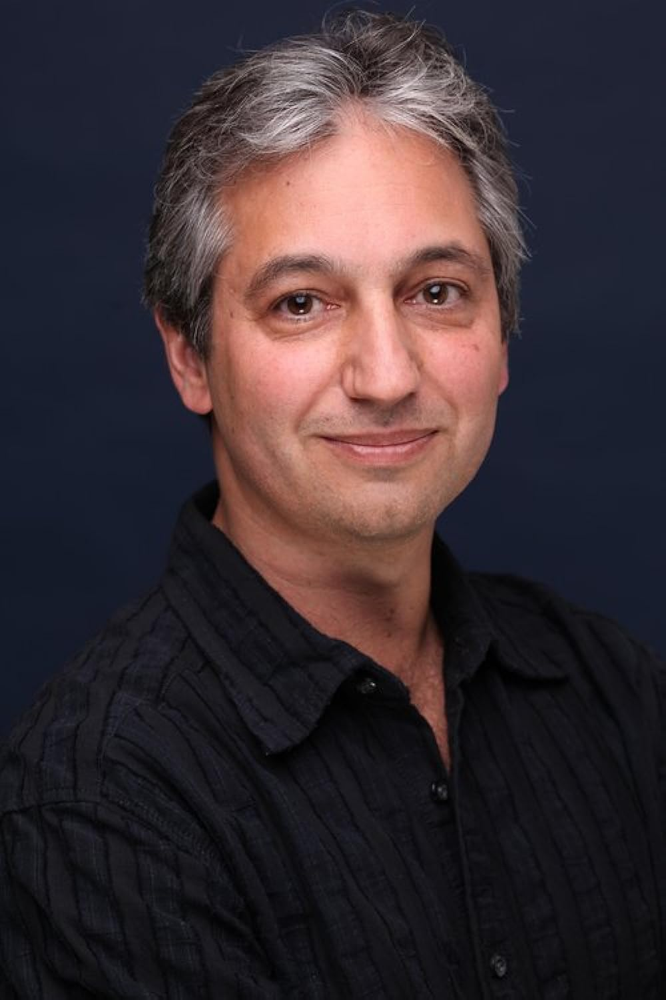

David Shore
(London, Ontario, 3 de julio de 1959)
El creador y escritor principal de la serie "Dr. House" (House M.D.). Es un escritor canadiense de series de televisión que trabajó en Family Law, NYPD Blue y Due South. Creó la aclamada serie House y, más recientemente, Battle Creek y The Good Doctor.
Shore comenzó su carrera en la televisión trabajando como guionista y desarrolló una reputación con habilidades únicas para mezclar drama, comedia y elementos psicológicos complejos. Su salto a la fama mundial llegó con "House M.D.", la cual siguió las historias del brillante pero misántropo Dr. Gregory House y su equipo mientras diagnosticaban casos médicos complejos.